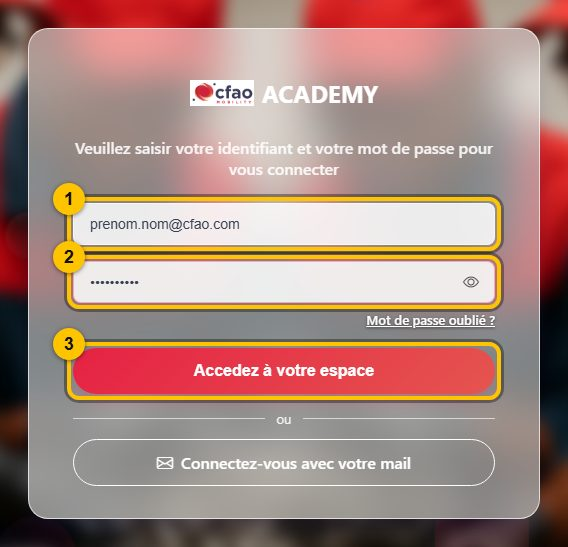
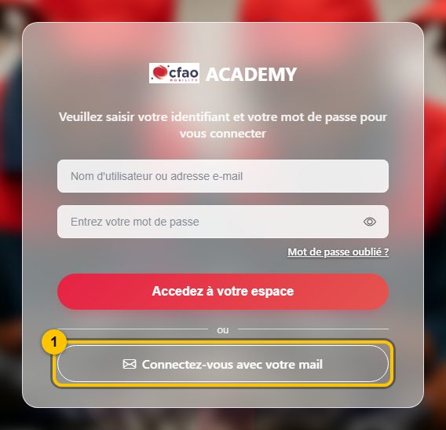
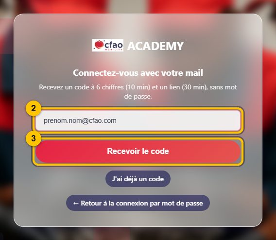
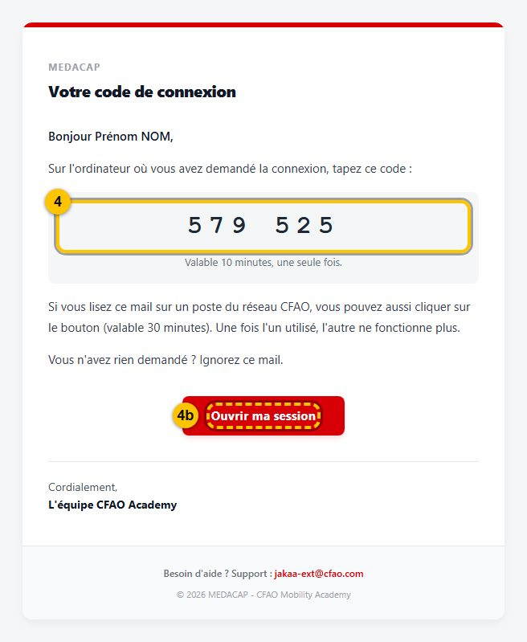
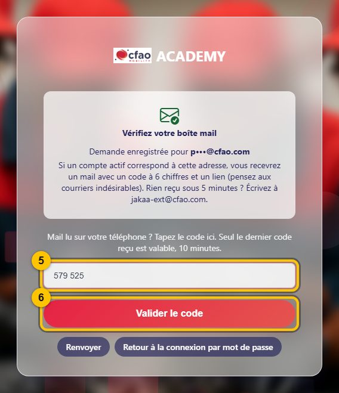

Se connecter à MEDACAP
Adresse à ouvrir depuis un PC du réseau CFAO :
http://10.68.0.15:8010/
Connaissez-vous votre mot de passe MEDACAP ?
Chemin A — avec mon mot de passe
1 Tapez votre adresse mail @cfao.com 2 Tapez votre mot de passe 3 Cliquez sur « Accedez à votre espace »

✅ Vous êtes connecté
Mot de passe refusé ? Prenez le chemin B.
Chemin B — sans mot de passe, avec un code reçu par mail
Le lien « Mot de passe oublié ? » mène au même endroit : suivez ce chemin.
1 Cliquez sur « Connectez-vous avec votre mail », en bas de l'écran

Un nouvel écran s'affiche
2 Tapez votre adresse mail @cfao.com 3 Cliquez sur « Recevoir le code »

Ne fermez pas cette page. Ouvrez Outlook.
4 Ouvrez le mail « MEDACAP - Votre code de connexion » et lisez le code à 6 chiffres. Pas de mail ? Regardez dans Courrier indésirable.

4b Raccourci : si vous lisez ce mail sur votre PC CFAO, cliquez simplement sur « Ouvrir ma session ». C'est fini, vous êtes connecté.
Revenez sur la page MEDACAP restée ouverte
5 Tapez le code 6 Cliquez sur « Valider le code »

✅ Vous êtes connecté
Ça ne marche pas ?
- Pas de mail après 5 minutes (même dans Courrier indésirable) : écrivez à jakaa-ext@cfao.com.
- « Code incorrect ou expiré » : le code dure 10 minutes et seul le dernier reçu marche. Cliquez sur « Renvoyer » et prenez le nouveau mail.
- La page ne s'ouvre pas : vous devez être sur un PC du réseau CFAO.